I am a Data & Business Intelligence Analyst who turns
complex data into clear, reliable insights that support better business
decisions.
My work spans SQL, Python, Microsoft Excel, and Tableau, with a focus on
data preparation, validation, exploratory analysis, performance measurement,
pattern discovery, and dashboard development. I communicate findings in a
clear, practical way to both technical and non-technical audiences.
FEATURED PROJECTS
A selection of projects where I've applied data analysis to real-world
business questions — from understanding customer behaviour and market
trends to evaluating performance and uncovering actionable insights.
Explore a few of my featured projects below, or dive into the full
project portfolio to see the analysis, findings, and business
recommendations behind each one.
OLIST E-COMMERCE ANALYSIS
SQL-driven analysis of e-commerce data to investigate
revenue, customer behaviour, product performance,
seller activity, and delivery trends.
A business performance analysis of a coffee chain,
examining revenue, profitability, transaction trends, product mix,
regional performance and loyalty participation.
Tableau | Business Performance | Revenue & Profitability Analysis
A collection of analytical projects where I apply data cleaning,
analysis, visualization, SQL, and business intelligence to solve
practical problems and communicate meaningful insights.
Tableau · Business Performance · Revenue & Profitability Analysis
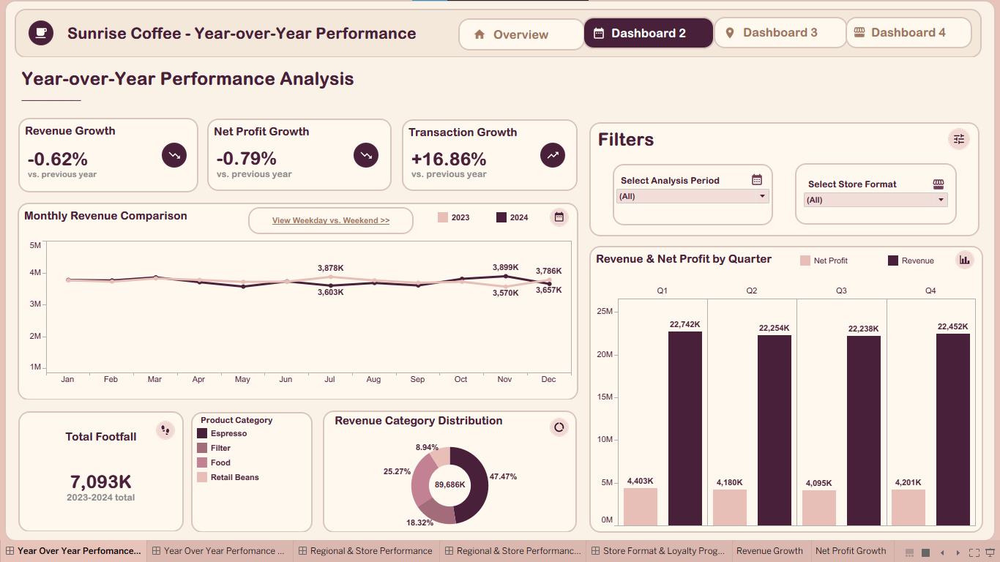
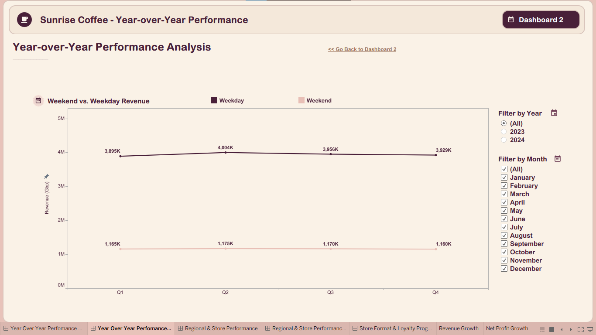
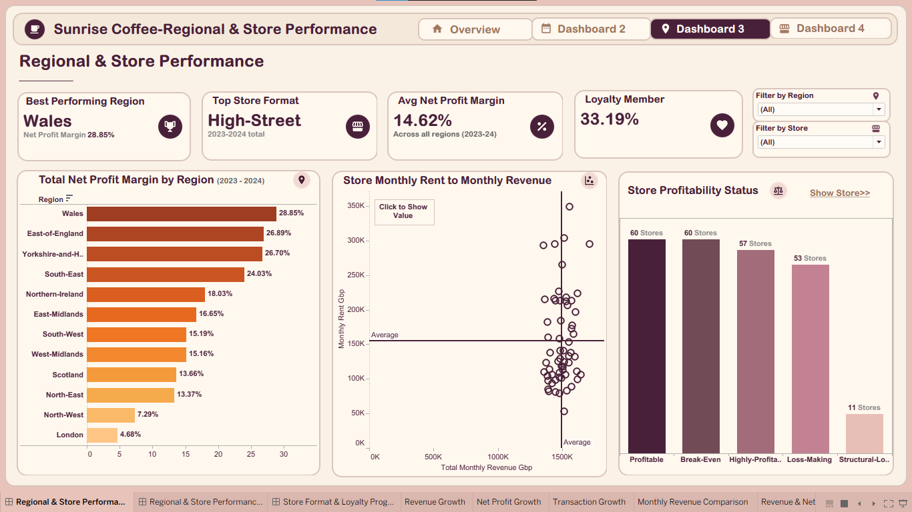
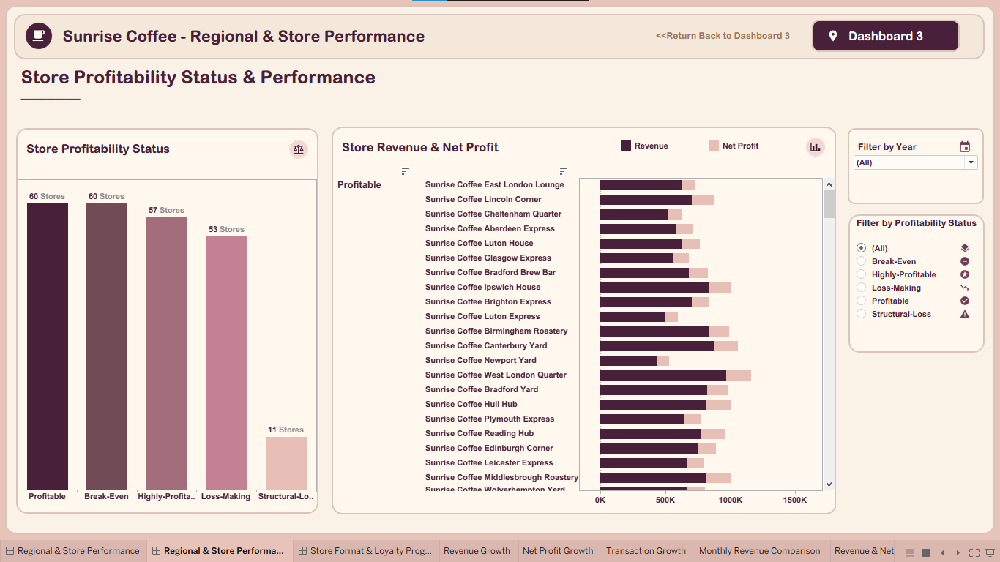
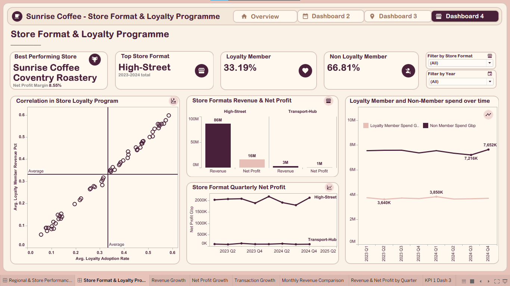
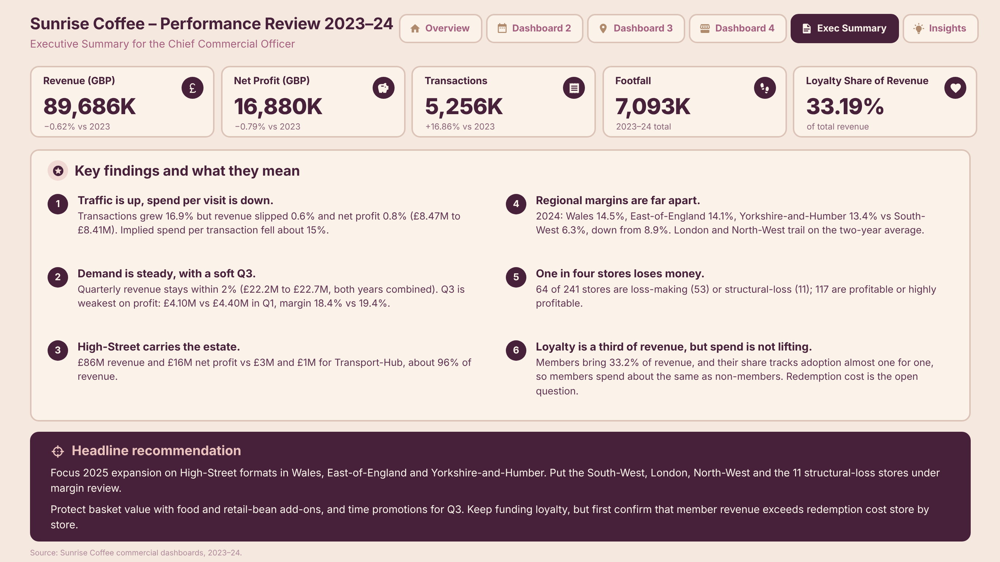
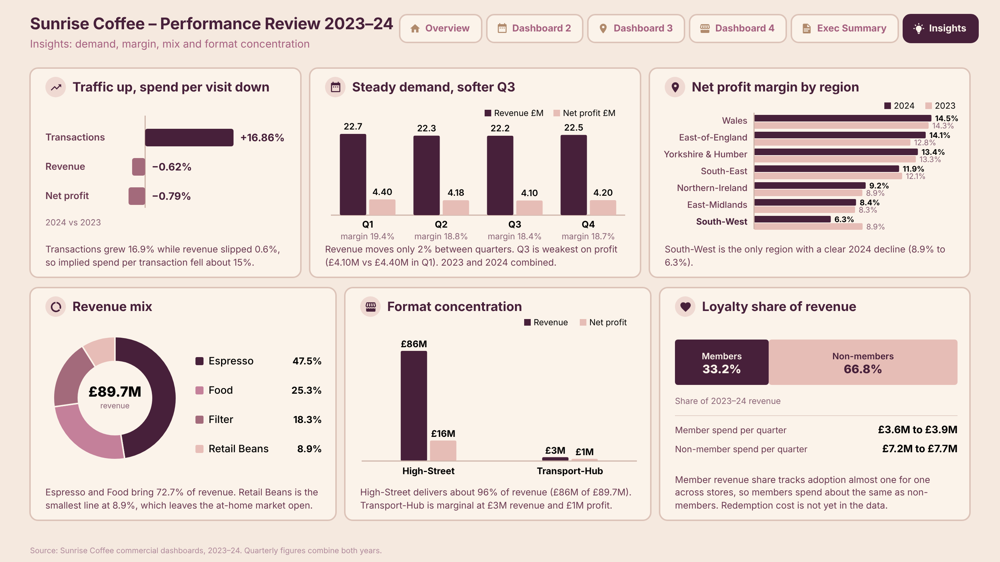
Scroll to explore
A Tableau-based business performance analysis of a coffee chain,
examining revenue, profitability, transaction trends, product mix,
regional performance and loyalty participation.
The analysis evaluates performance across business dimensions and
highlights differences between revenue contribution, net margin,
product categories and customer loyalty. It translates the findings
into practical considerations for performance monitoring and
commercial decision-making.
See more
.
E-Commerce Analytics · SQL Analysis · Business Intelligence
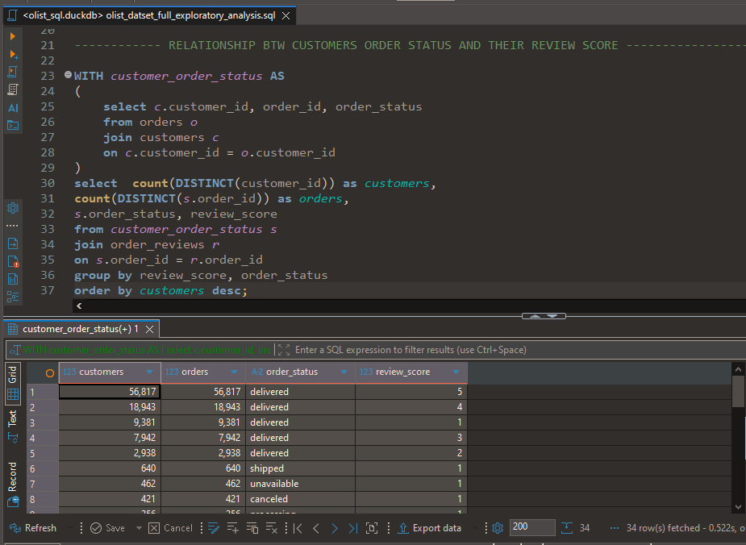
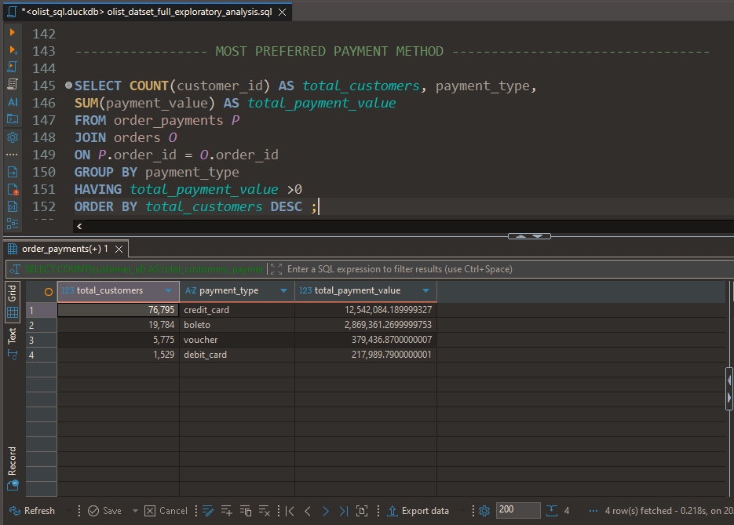
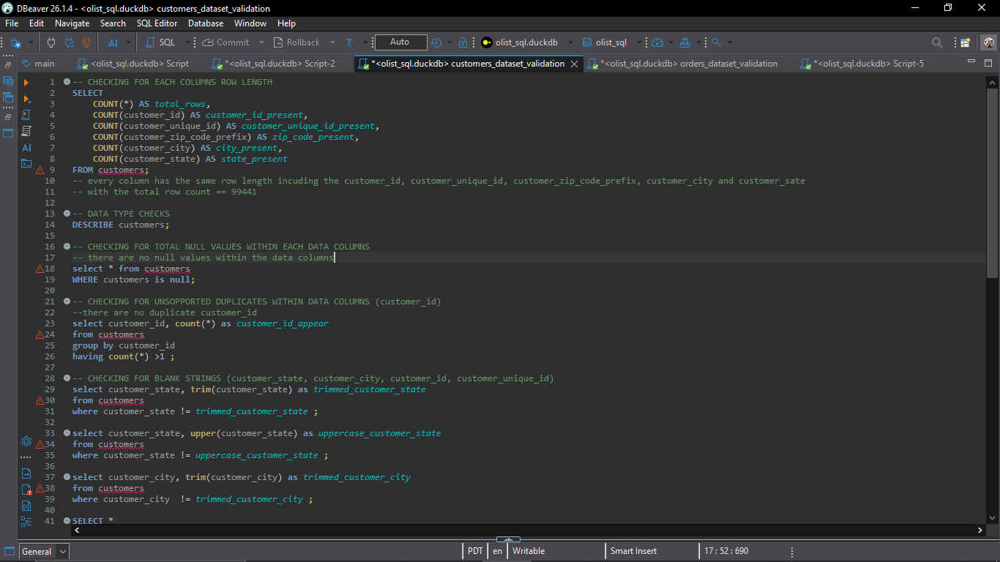
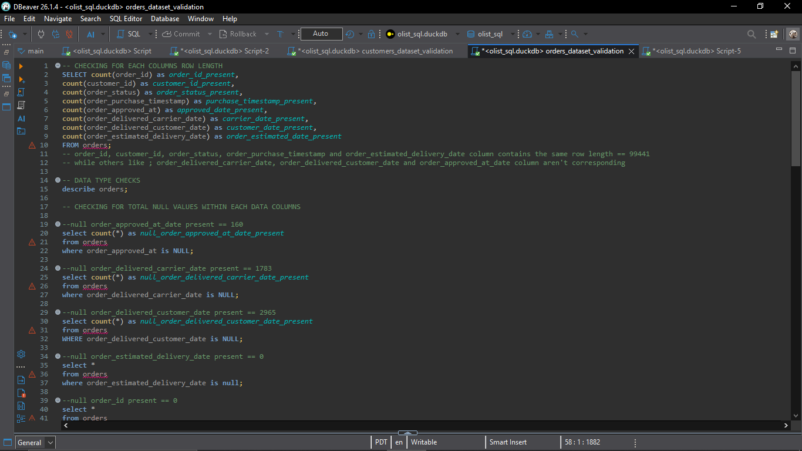
Scroll to explore
An end-to-end SQL analysis of the Olist Brazilian e-commerce
marketplace. The project examines interconnected customer, order,
product, payment, review, delivery, and seller data to understand
commercial and operational patterns.
The analysis covers data validation and relational integrity,
customer and geographic behaviour, order fulfilment, delivery
performance, product demand, payment behaviour, seller activity,
and business-focused findings and recommendations.
See more
.
Banking Analytics · Customer Experience · Business Intelligence
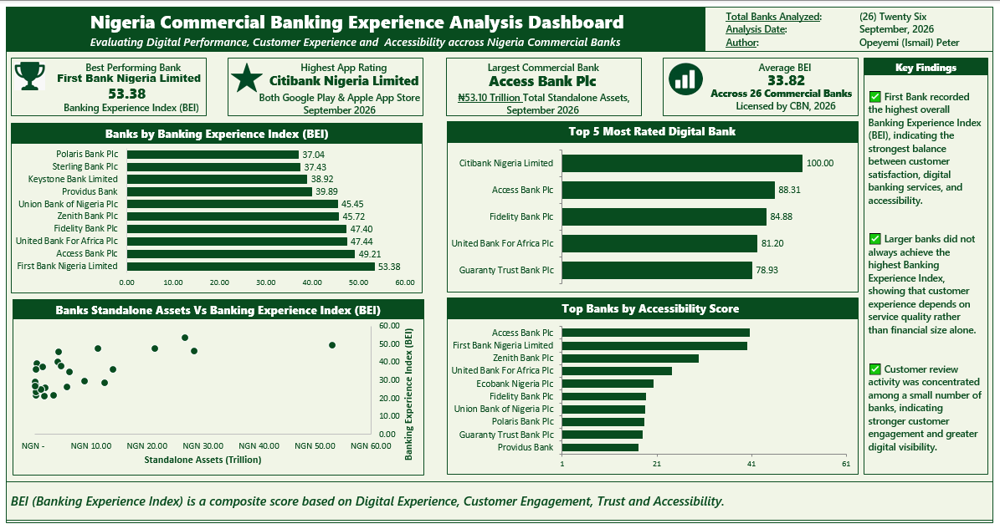
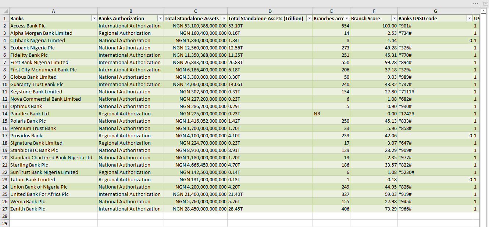
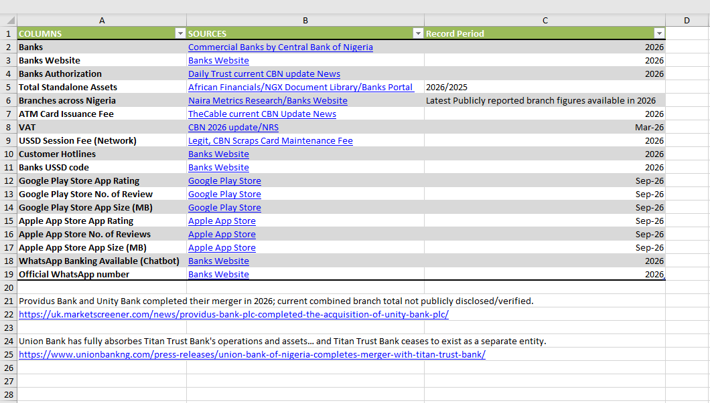
Scroll to explore
A Microsoft Excel business analysis project evaluating customer
banking experience across 20 major Nigerian commercial banks
using a custom Banking Experience Index (BEI).
The analysis combines digital banking performance, customer
engagement, service affordability, accessibility, app ratings,
reviews, downloads, USSD services, and other customer-facing
indicators to compare overall banking experience.
See more
.
Banking Analytics · Customer Experience · Business Intelligence
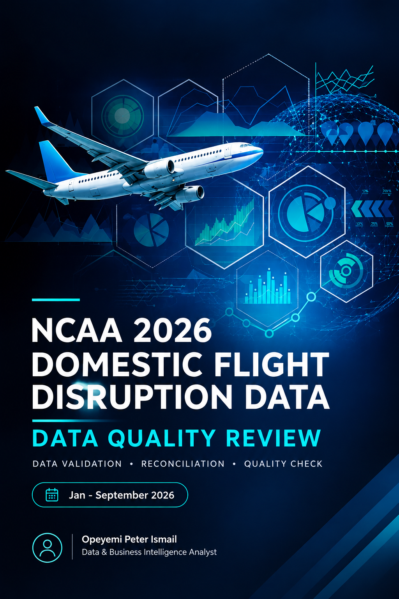
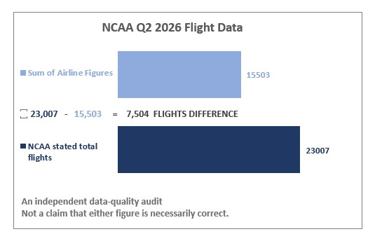
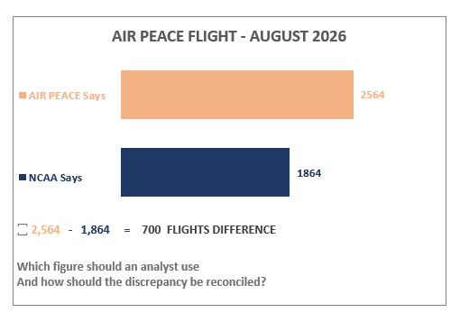
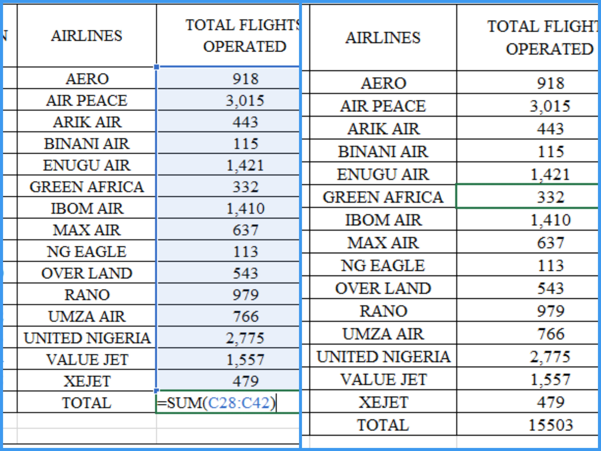
Scroll to explore
An independent data audit examining inconsistencies between
published NCAA domestic flight statistics and airline-level
figures for selected reporting periods in 2026.
The investigation compares reported totals, identifies numerical
differences and highlights where further reconciliation and
clarification are needed. It demonstrates the importance of
source validation, transparent calculations and careful
interpretation of public data.
See more
.
An end-to-end analysis of data-related job postings designed
to understand hiring demand across roles, companies,
locations, and recruitment platforms.
The workflow involved cleaning and preparing a 975-record
dataset with Python, validating and structuring the data
with Excel, performing exploratory analysis, and communicating
the findings through an interactive Tableau dashboard.
See more
.
A retail sales analytics project focused on understanding
sales performance, product performance, regional trends,
revenue, and profitability.
The project followed a structured workflow covering data
cleaning, exploratory data analysis, visualization,
dashboard development, and business recommendations.
The analysis identified strong product and regional
performance patterns that can support inventory,
marketing, and profitability decisions.
See more
.
A job market analysis project built around collecting and
analysing job posting data through web scraping.
Python Requests and BeautifulSoup were used to collect and
organise job posting information, followed by data cleaning
with Excel and dashboard development with Tableau.
The analysis explored hiring patterns, job locations,
companies with the highest posting volume, and the most
in-demand roles.
See more
.
More projects and analytical case studies will be added as
I continue exploring new business problems and datasets.
PROFESSIONAL PROFILE
ABOUT
Data Analyst |
Business Intelligence
Profile
I'm Opeyemi Peter Ismail, a Data Analyst focused on
transforming raw and complex datasets into clear, actionable insights
that support better business decision-making.
My work involves data cleaning and validation, exploratory
data analysis, relational data analysis, business analysis,
dashboard development, and insight generation. I enjoy
investigating data to identify patterns, understand performance,
uncover opportunities, and communicate findings in a way that is
clear to both technical and non-technical audiences.
I've been recognized for my commitment to continuous growth and development.
My goal is not just to analyze data, but to help businesses make better decisions with it.
What I Bring
01
Data Analysis
Cleaning, validating, exploring, and interpreting datasets
to uncover meaningful patterns and trends.
02
Business Insight
Connecting analytical findings to business questions,
performance measurement, and actionable recommendations.
03
Data Visualization
Developing dashboards and visual reports that make important
trends, KPIs, and findings easier to understand.
04
Analytical Communication
Communicating insights clearly so that analytical findings
can be understood and used for better decisions.
Technical Toolkit
Analysis & Querying
SQLPythonMicrosoft Excel
Visualization & BI
TableauPivot TablesPivot Charts
Python Libraries
PandasNumPyMatplotlibBeautifulSoupRequests
Tools
Jupyter NotebookDuckDBDBeaverGitHub
Education & Professional Recognition
Bachelor of Science (B.Sc.), Computer Science
Federal University of Agriculture, Abeokuta, Nigeria (FUNAAB)
HP LIFE Ambassador
Earned the
HP LIFE
Ambassador Badge for promoting analytical courses and encouraging others to develop practical data analytics skills.
Have a project, opportunity, or idea you'd like to discuss?
Send me a message and I'll get back to you.
Message Sent! ✓
Thanks for reaching out! Your message has been received successfully.
I'd love to stay connected. Feel free to explore my work
and connect with me on my social platforms below.
Let's connect →
OPEYEMI PETER
Thanks for stopping by. Whether you're here to collaborate
or just curious, I appreciate the visit. You can as well connect
with me through my professional and social platforms.
Beyond working with data, I enjoy exploring ideas, experimenting with technology
and building digital experiences. Here are some of the things I've created beyond analytics.
Plss… those seeds are my face. Tap a pit on your side (bottom) to sow them, Àyò style.
First to capture 25 wins.
Challenger 0You 0
Your move. Pick a pit.
Playable
Real brands
AI as my co-pilot
Creative projects 3 builds
Build 01
Àyò Journey
A playable seed-board game that brings Àyò (also known as Oware or Mancala),
a traditional African strategy game, to the screen.
What I set out to create
A playful, mobile-first way to enjoy an African game I love: a journey that starts in Lagos
and travels across Africa, with quick matches, pass-and-play, friend challenges shared
over WhatsApp, a rules guide and a collection of proverbs, and more.
Tools & technologies
HTML
CSS
JavaScript
SVG art
Three.js
Installable web app (PWA)
🤖 How AI helped
I came up with the idea, the features and the African theme, and directed and tested every change.
AI helped write much of the code and generate some of the artwork, such as the premium character portraits.
A brand website for a Nigerian cakes, small chops and event-catering business,
created with AI assistance.
What I set out to create
A warm, professional online home for the brand: it shows the products, services and gallery
and makes it easy for customers to place an order or get in touch through WhatsApp.
Tools & technologies
HTML
CSS
JavaScript
Responsive design
WhatsApp ordering links
🤖 How AI helped
I defined the brand, the pages and what customers should be able to do, and reviewed the result.
AI helped build the website code and layout from those directions.
A communication companion for deaf and non-speaking Nigerians Name to be announced
An Android app I'm designing so that no one is left out of a conversation because of how they hear or speak.
No one should be left out of a conversation because of how they hear or speak.
The problem
In hospitals, markets, classrooms and offices, deaf and non-speaking people often struggle to follow
what is being said or to be understood, and most hearing people don't know sign language.
The vision
A simple, friendly app that turns nearby speech into readable captions and lets people reply by typing
or tapping ready-made phrases that the phone says aloud, with clear emergency help built in.
How I'm approaching it
Nigerian-first (everyday situations and accents), light on data, and honest: if the app isn't sure
what it heard, it says so. Built with deaf Nigerians, not just for them.
Where it stands
Early stage: research and design. Testing with the deaf community comes before any public release.
🤝 Looking for
Sponsors, partners, and deaf organisations or schools who would like to help shape and test it.